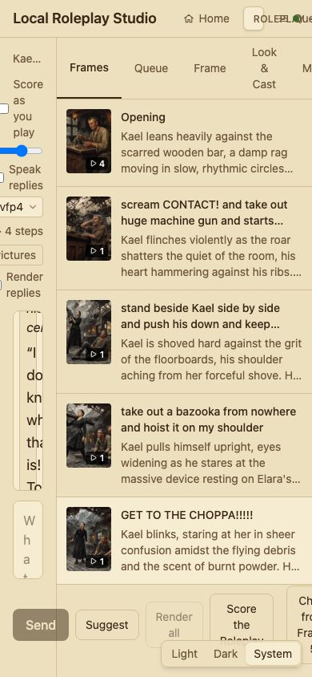
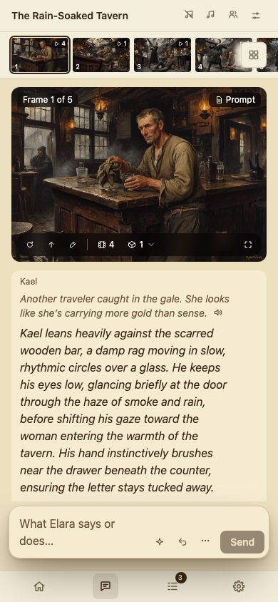
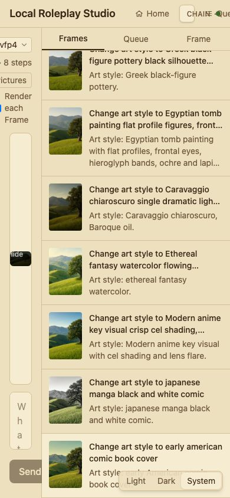
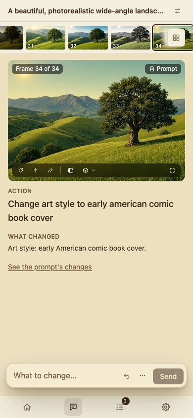
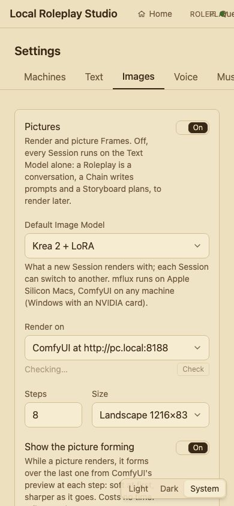
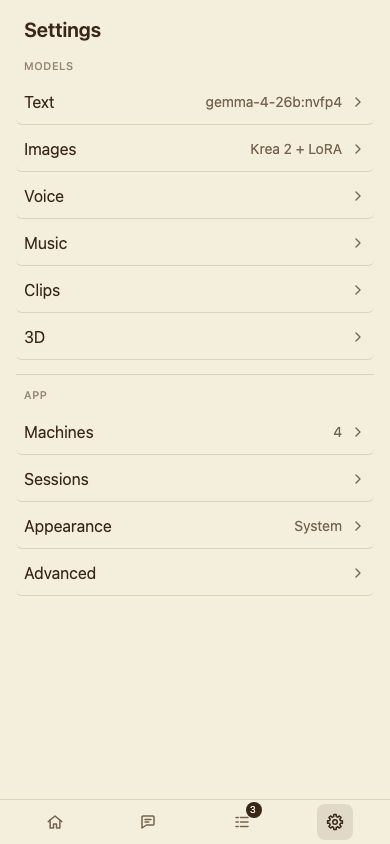
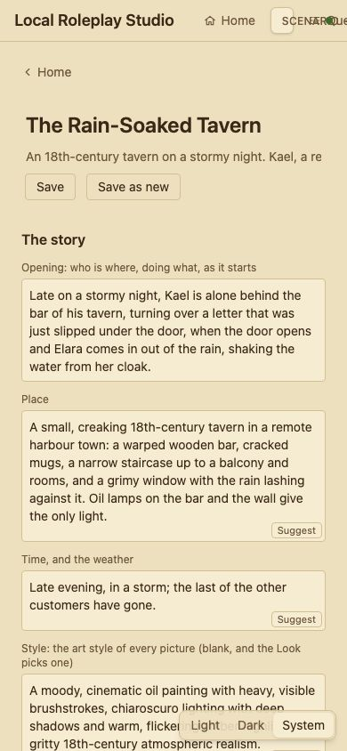
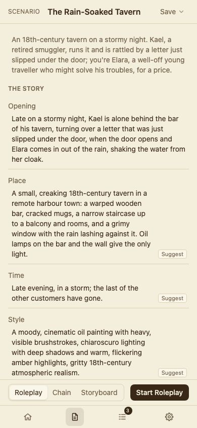

screens branch · 11–13 Nov 2026 · on the Mac
The app as it was on main, beside the screens branch, with the same Sessions at the same sizes. Each screen says what changed, why, and what else was weighed on the way. Click a screenshot to open it full size. For publishing, the screenshots show the local network address as pc.local and the Text Model without its variant's name, and one Session's picture on Home is cropped to its top.
Screenshots of every screen at 390, 1440, 1920, 2560 and 3440 px, taken on 11 Nov, showed screens that had grown a control at a time:
A page of mockups was drawn from that, and the owner picked from it. The colours came first, so every later stage was built and judged in the final look.
deno task shot gained --touch to check it as a phone sees it./settings/images); ✕, Esc or a click beside it goes back.Before, the Session screens squashed their three columns into 390 px and the header ran over itself. Now one rule set carries every screen: the rail becomes a tab bar; what opens beside a screen on a desktop opens as a sheet from the bottom; one column in the order it's used; and the main button stays put. These were seen in a headless browser as a touch screen, not on a real phone.







